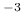
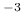

Specify density profiles (or matrix, see below) of various trace gases to be included in the radiative
transfer calculation.
mol_file gas_species filename [unit]
At the moment following gas_species are included: ozone (O3), nitrogen dioxide (NO2), water vapor (H2O),
bromine oxide (BRO), chlorine dioxide (OCLO), formaldehyde (HCHO), carbon dioxide (CO2),
sulphur dioxide (SO2), oxygen (O2), the oxygen dimer (O4), methane (CH4), nitrous oxide (N20),
carbon monoxide (CO), and nitrogen (N2).
The gas species is identified
by their abbrevations given in the parenthesis above.
The model expects a density file with two columns:
- 1
-
Altitude above sea level in km.
- 2
-
The density of trace gas [in the specified unit]
The altitude grid may be different from that in atmosphere_file. All densities inside the range of the mol_file are replaced. For all other altitudes the values from the atmosphere_file are used. If the density is specified as -1 at a level, the value from atmosphere_file is used. Altitude ranges not covered by the atmosphere_file are ignored.
unit is an optional argument to define the unit of the density. The profiles can
be given in particles per cm (cm_3), in particles per m
(cm_3), in particles per m (m_3), as volume mixing ratio (vmr), as mass mixing
ratio (mmr), or as relative humidity (rh) (only for water). The default for unit is cm.
(m_3), as volume mixing ratio (vmr), as mass mixing
ratio (mmr), or as relative humidity (rh) (only for water). The default for unit is cm.
To scale the profile to a total column value use mol_modify.
For airmass factor calculations it is for some species necessary to account for the
variation of the profile with sza. This may be accomplished by specifying a mol_file
in the following format:
0.0 SZA1 SZA2 ...
z(1) dens(1,1) ...
z(2) . .
. . .
where z(i) are the altitude levels above sea level in km, SZA is the solar zenith
angle in degrees, and dens is the density [in the specified unit] of the trace gases as
function of solar zenith angle and altitude.
The matrix may only be specified for one species. It may however be combined with profiles
of other species.
A density matrix can only be used in connection with rte_solver sdisort!